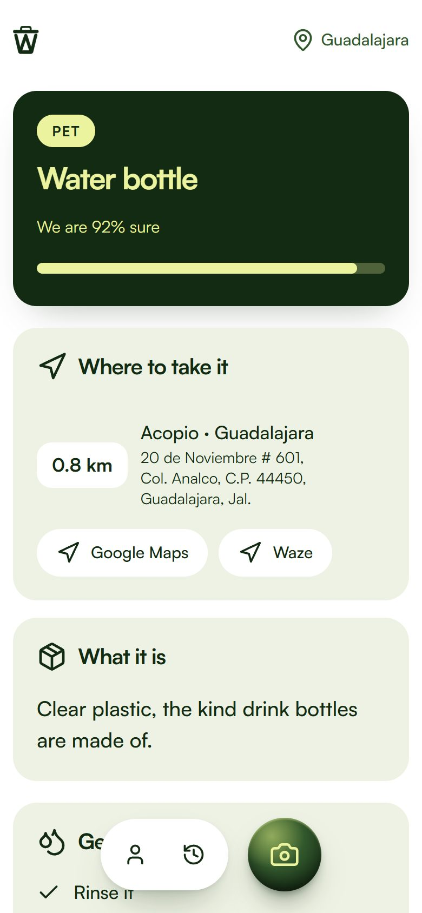
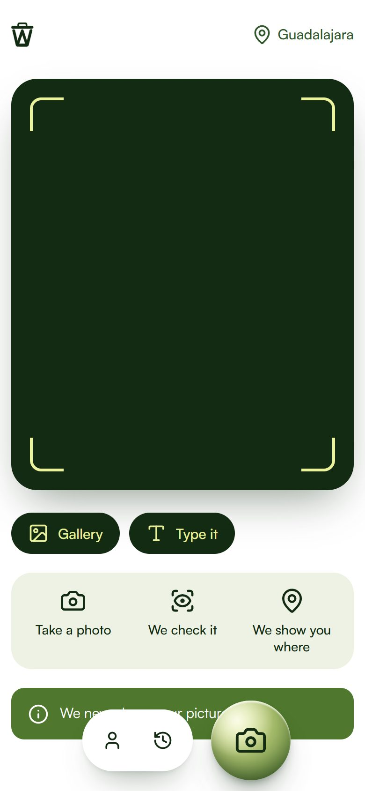
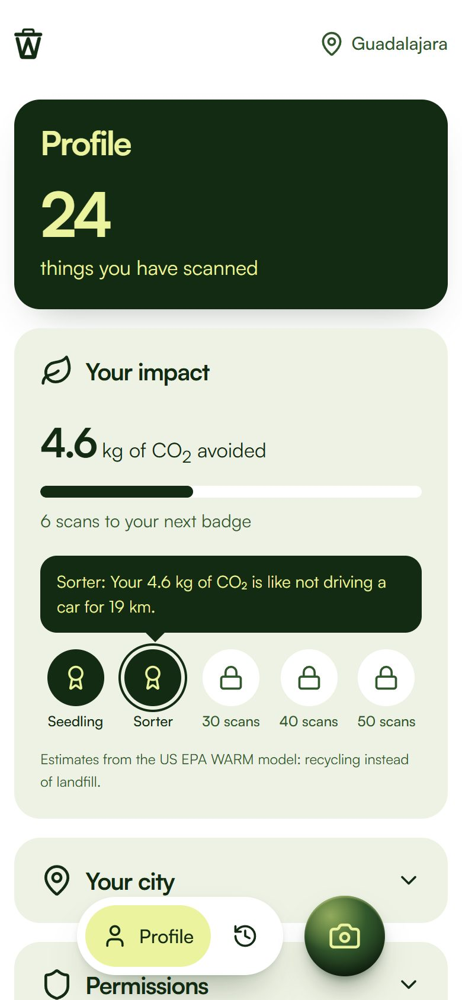

Bottle, can or box?
We sort it.
Its material, how to get it ready, and the nearest drop-off point with the route.

Snap what you are about to throw away. We tell you what it is made of and the closest place in Guadalajara that takes it.

Its material, how to get it ready, and the nearest drop-off point with the route.

Every item you sort right adds up in kg of CO2 avoided. A new badge every ten.

Every place comes from SEMADET's register of 524 collection and recycling sites in Jalisco. No guessing.
Take a photo of whatever you are about to throw away.
We check what it is made of and how to get it ready.
We show you the closest authorised place that takes it.
Confirm and earn a new badge every ten items.
Wasted runs in your phone's browser. Nothing to install, and we never keep your photos.
Get the appOn a computer? Open this page on your phone.